Module 13 · Machine learning and neural networks for state discrimination
From data re-uploading, PINNs and FPGAs to the project's Cholesky head
- Explain the Cholesky head and the differentiable Helstrom layer
- Tell a PINN from a physics-constrained surrogate
- Compute parameters, latency and variance in the examples
📚 Source documents of this module (each file checked against its actual content)
| File in the archive | Paper (verified against its content) | Pages | Status | Used in this module |
|---|---|---|---|---|
| Data_Reuploading_Universal_Quantum_Classifier.pdf | Data re-uploading for a universal quantum classifier A. Pérez-Salinas, A. Cervera-Lierta, E. Gil-Fuster, J. I. Latorre · 2020 · Quantum (accepted 2020-01-27), arXiv:1907.02085 | 19 | Read, title matches | Read; formulas and numbers cited |
| Physics-Informed_Neural_Networks_for_Quantum_Internet_Modeling_Concepts_Implementation_and_Future_Directions.pdf | Physics-Informed Neural Networks for Quantum Internet Modeling: Concepts, Implementation, and Future Directions A. Alsaui, S. K. O. Soman, B. D. E. McNiven, H. Shin, O. A. Dobre · 2026 · IEEE Commun. Mag., Jan. 2026, pp. 238-243 | 6 | Read, title matches | Read; formulas and numbers cited |
| Quantum_State_Discrimination_Noisy_QNN.pdf | Quantum State Discrimination with Noisy QNN (name from file; unreadable) - · - · - | - | No extractable text | Corrupt PDF (no xref table); no content used |
| Dual_Frame_Optimization_POVM_Machine_Learning.pdf | Dual frame optimization for informationally complete quantum measurements L. E. Fischer, T. Dao, I. Tavernelli, F. Tacchino · 2024 · arXiv:2401.18071v2 | 13 | Read, title matches | Read; formulas and numbers cited |
| Learning_to_Measure_Adaptive_POVM.pdf | Learning to measure: adaptive informationally complete generalized measurements for quantum algorithms G. García-Pérez, M. A. C. Rossi, B. Sokolov, F. Tacchino, P. Kl. Barkoutsos, G. Mazzola, I. Tavernelli, S. Maniscalco · 2021 · arXiv:2104.00569v2 | 18 | Read, title matches | Read; formulas and numbers cited |
| ML_Powered_FPGA_Quantum_State_Discrimination.pdf | ML-Powered FPGA-based Real-Time Quantum State Discrimination Enabling Mid-circuit Measurements N. R. Vora, Y. Xu, A. Hashim, N. Fruitwala, H. N. Nguyen, H. Liao, J. Balewski et al. · 2024 · arXiv:2406.18807v3 | 14 | Read, title matches | Read; formulas and numbers cited |
| Deep_Reinforcement_Learning_Quantum_State_Discrimination.pdf | Realizing a deep reinforcement learning agent for real-time quantum feedback K. Reuer, J. Landgraf, T. Fösel, J. O'Sullivan, L. Beltrán et al. · 2023 · Nat. Commun. 14, 7138 | 7 | Read, title matches | Read; formulas and numbers cited |
| Gradient_Descent_Quantum_Detector_Tomography.pdf | Gradient-descent methods for quantum detector tomography A. Anteneh, O. Pfister · 2025 · arXiv:2511.14579v1 | 9 | Read, title matches | Read; formulas and numbers cited |
Lecture (slides)
Use the ← → keys or the buttons; ⛶ opens full-screen presentation.
The Helstrom bound as a label for machine learning
- \(\rho_0,\rho_1\)received states for bit 0 and bit 1
- \(\lambda_i\)eigenvalues of \(\tfrac12(\rho_1-\rho_0)\)
- \(\|\cdot\|_1\)trace norm: sum of absolute eigenvalues
For pure BPSK \(P_e=\tfrac12\bigl(1-\sqrt{1-e^{-4\bar n}}\bigr)\); at \(\bar n=1.1\) it equals \(0.003079\). An SDP solver needs about 85 ms per sample for this value, the surrogate only 0.118 ms.
Map of the eight papers in the module
| Theme | Paper | What we take |
|---|---|---|
| Network and measurement | Pérez-Salinas 2020 | data re-uploading, fidelity loss |
| PINN | Alsaui 2026 | Lindblad residual in the loss |
| Noisy QNN | (unreadable) | no content used |
| Dual frame | Fischer 2024 | variance reduction |
| Adaptive POVM | García-Pérez 2021 | gradient POVM optimisation |
| FPGA | Vora 2024 | 54 ns inference, 65 parameters |
| Reinforcement | Reuer 2023 | 48 ns agent on FPGA |
| Detector tomography | Anteneh 2025 | gradient descent instead of SDP |
Common theme: parametrise a quantum object (\(\rho\), POVM \(\{E_n\}\)) so that \(\rho\succeq0\) and \(\sum_nE_n=I\) hold by construction.
Supervised learning with oracle labels
- \(\|\cdot\|_F\)Frobenius norm
- \(\lambda\)Helstrom weight; the final runs use \(\lambda=1\)
- \(\hat P_e\)error computed from \(\hat\rho\) by eigenvalues
Entries of \(\rho\) are of order \(10^{-3}\), so \(\|\cdot\|_F^2\) is tiny (about \(10^{-8}\)) and the state loss can be dominated by the Helstrom loss: track both terms separately.
Data re-uploading in a single-qubit classifier
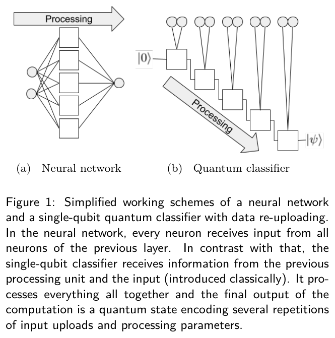
Nguồn: Pérez-Salinas et al., Quantum, 2020, Fig. 1, tr. 3
- \(U(\vec x)\)data loaded as a rotation
- \(\vec\phi_i\)processing parameters of layer \(i\)
Eqs. (1), (2), p. 3: \(|\psi\rangle=\mathcal U|0\rangle\). The data enter many times, as every hidden neuron receives the input again.
Compressed layers and measurement in the re-uploading classifier
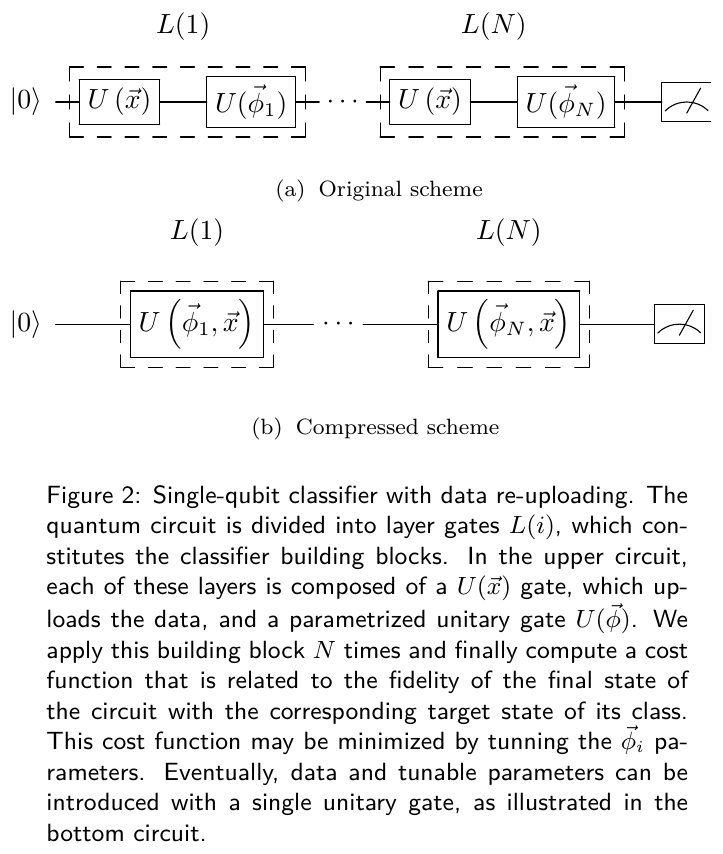
Nguồn: Pérez-Salinas et al., Quantum, 2020, Fig. 2, tr. 4
- \(\vec\theta_i,\vec w_i\)angles and weights to learn
- \(\circ\)Hadamard product
Eq. (5), p. 4: compression halves the depth from \(2N\) to \(N\). Two-class rule: class A if \(P(0)>\lambda\).
The weighted fidelity cost function
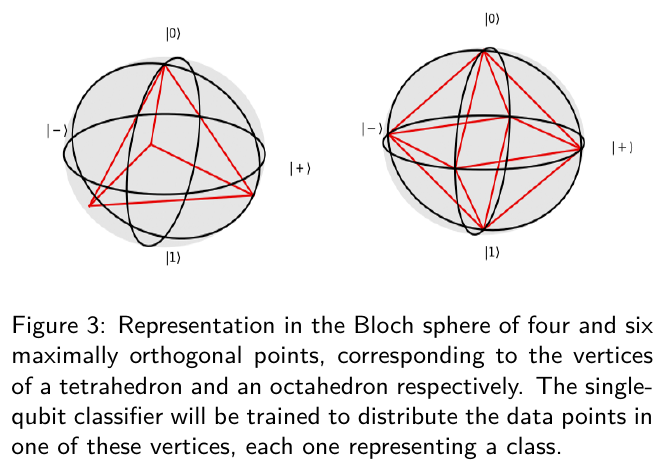
Nguồn: Pérez-Salinas et al., Quantum, 2020, Fig. 3, tr. 5
- \(Y_c\)target: 1 for the true class, \(1/3\) for others (tetrahedron)
- \(\alpha_c\)class weights, learned with \(\vec\theta,\vec w\)
Eq. (9), p. 5. For the tetrahedron \(|\langle\tilde\psi_r|\tilde\psi_s\rangle|^2=0.3333\approx1/3\) (checked by code).
The Cholesky head guarantees a valid state
- \(v\)linear output of the backbone (\(d^2\) numbers)
- \(L\)lower-triangular matrix
- \(\operatorname{softplus}\)\(\ln(1+e^x)\), always positive
For every \(v\): \(\rho=\rho^\top\), \(\rho\succeq0\) (since \(x^\top LL^\top x=\|L^\top x\|^2\ge0\)) and \(\operatorname{Tr}\rho=1\). No penalty term is needed.
ttn-12-08/model/heads.py: RealCholeskyPSDHeadThe differentiable Helstrom layer
- \(u_i\)unit eigenvector for \(\lambda_i\)
- \(\Delta\)difference operator of the two states
This gradient (Giles, 2008) fails only when two distinct eigenvalues collide, not at \(\lambda_i=0\). The result is clamped to \([0,\tfrac12]\).
ttn-12-08/model/losses.py: helstrom_error_equal_priors (torch.linalg.eigvalsh)The project's Operator-Cholesky architecture
| Block | Configuration | Parameters (d=16) |
|---|---|---|
| Physics features | 9 features (slides9), z-score | 0 |
| SharedMLP | [9, 128, 128, 256, 256], SiLU | 116608 |
| Two Cholesky heads | \(2\times\)Linear(256, \(d^2\)) | 131584 |
| Total | 248192 |
Parameters of a linear layer: \(n_{\rm in}n_{\rm out}+n_{\rm out}\). The \(\rho_1\) head can be replaced by \(\rho_1=\Pi\rho_0\Pi\) (ParityCholesky head), reducing the total to 182400.
\( \Pi=\operatorname{diag}\bigl((-1)^n\bigr),\quad \rho_1=\Pi\rho_0\Pi\ \text{(BPSK phase parity)} \)
A PINN puts the governing equation into the loss
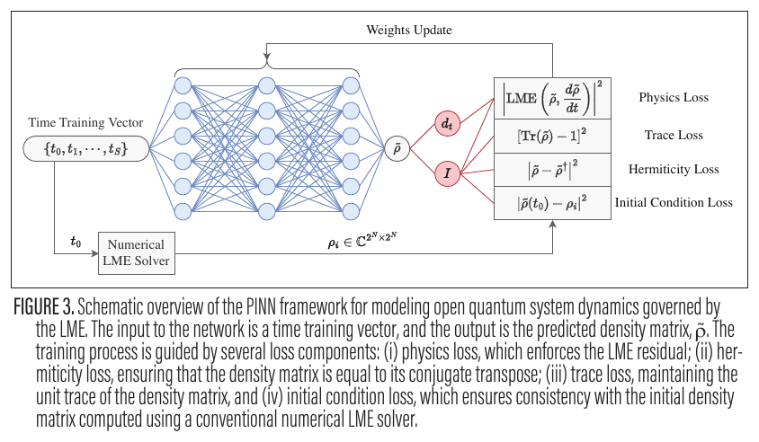
Nguồn: Alsaui et al., IEEE Commun. Mag., 2026, Fig. 3, tr. 240
- \(\operatorname{LME}\)Lindblad residual
- \(t\)network input: time
Four terms: physics, trace, Hermiticity, initial condition (Fig. 3, p. 240). Derivatives of the output with respect to the input come from automatic differentiation.
Why the project's network is not a PINN
| Criterion | PINN | Surrogate of the project |
|---|---|---|
| Governing equation | yes (Lindblad, PDE) | none: Helstrom is algebra |
| Residual in the loss | yes | no: Frobenius and MSE of \(P_e\) |
| Input | coordinates \(t,x\) | channel parameters (5 raw, 9 features) |
| Physics enters by | the loss | features, Cholesky head, Helstrom layer |
Reinforcement learning for a real-time feedback agent
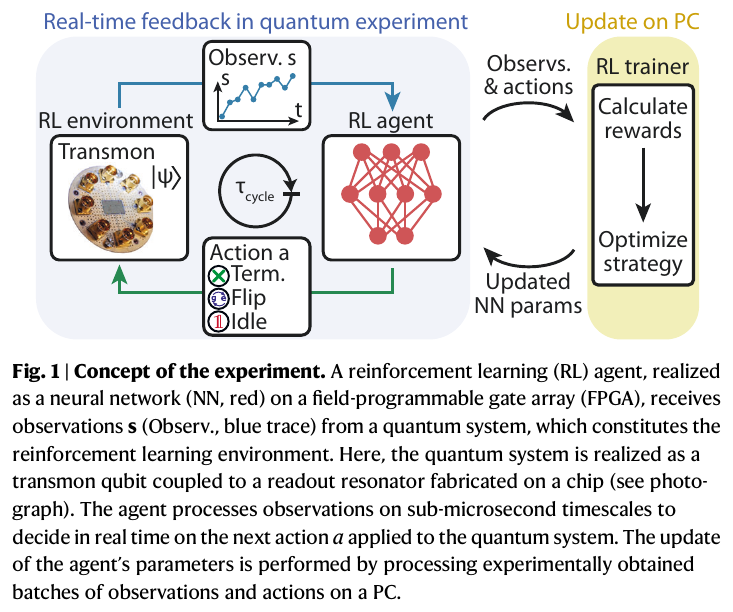
Nguồn: Reuer et al., Nat. Commun. 14:7138, 2023, Fig. 1, tr. 2
- \(\pi_\theta(a|s)\)policy: probability of action \(a\) given observation \(s\)
- \(\lambda\)per-cycle penalty trading fidelity for length
Actions: idle, flip, terminate. The agent trains directly on the experiment (pp. 2 to 3).
A worked three-dimensional Cholesky example
Raw three-dimensional outputs (lower-triangular entries) for \(v^{(0)}\) and \(v^{(1)}\): \(v^{(0)}=(0.9;0.4,0.6;-0.2,0.3,0.5)\), \(v^{(1)}=(0.8;-0.5,0.7;0.1,-0.3,0.4)\).
Eigenvalues of \(\rho_0\): 0.162, 0.342, 0.496, trace \(=1\). Helstrom bound of the pair: \(\hat P_e=0.30669\) (numpy, cross-checked in JS).
A raw matrix may stop being a state
- \(R\)raw \(d\times d\) output
- \(S\)symmetric part
For \(R=\begin{pmatrix}0.2&0.9&0.7\\0.9&0.1&0.8\\0.7&0.8&0.3\end{pmatrix}\): trace after normalisation \(=1\) yet smallest eigenvalue \(=-0.6399\lt0\). It has unit trace but is no state, so a trace-norm \(P_e\) is meaningless.
Fock truncation against the mean photon number
| \(\bar n\) | d=4 | d=8 | d=16 | d=32 |
|---|---|---|---|---|
| 0.5 | 0.0349 | 0.0351 | 0.0351 | 0.0351 |
| 1.1 | 0.00235 | 0.00308 | 0.00308 | 0.00308 |
| 4 | 0.0145 | 0.000112 | 2.76e-08 | 2.81e-08 |
| 8 | 0.0607 | 0.00636 | 2.36e-06 | 3e-15 |
Truncated pure-BPSK \(P_e\) (table): \(d=16\) is enough for \(\bar n\le1.1\) (relative gap \(<10^{-6}\)), but at \(\bar n=8\) one needs \(d\ge32\) and the true \(P_e\) is just \(3.16e-15\).
Numbers for the re-uploading classifier
- \(N\)number of layers
- \(C\)number of classes
| Problem | Setting | Success |
|---|---|---|
| Circle | 1 qubit, 2 layers, 12 params | >90% |
| Four classes (3-circles) | 1 qubit, 10 layers, 54 params | 92% |
| 4-D hypersphere | 1 qubit, 8 layers, 82 params | 97% |
| Three-class annulus | 1 qubit, 10 layers | 93% |
Source: Tables 1 to 4, pp. 10 to 12 (Pérez-Salinas 2020). The count \(5N+C\) for two-dimensional data matches the first two rows.
54 ns inference on an FPGA
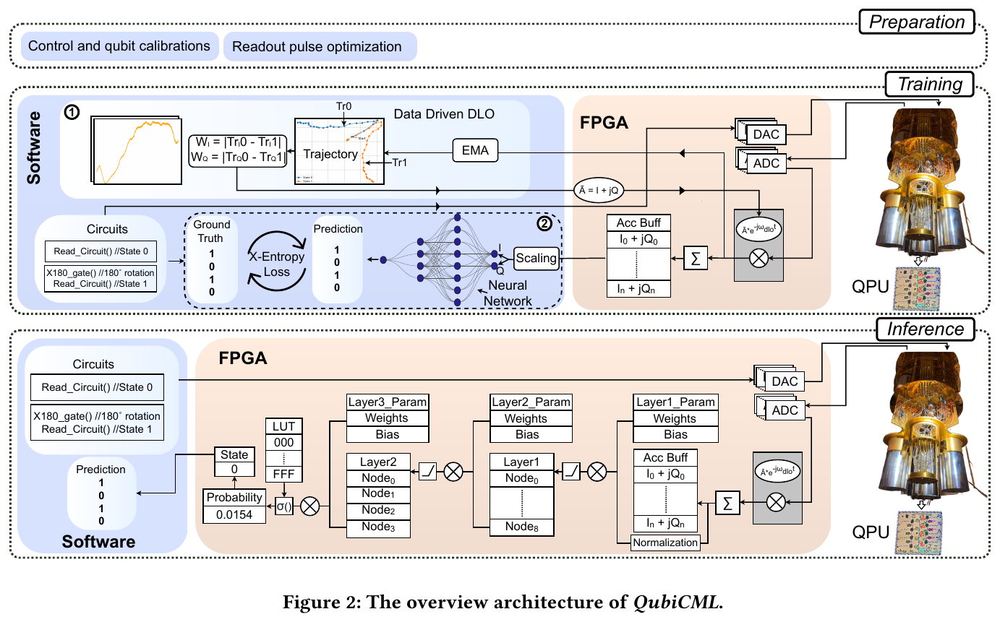
Nguồn: Vora et al., arXiv:2406.18807, 2024, Fig. 2, tr. 4
- \(27\)clock cycles of 2 ns each
\(27\times2\,\text{ns}=54\,\text{ns}\) (p. 10); 52 multiplications (p. 7), DSP \(1.11\%\) (Table 7, p. 12). Q1 fidelity \(98.46\%\) at 500 ns (Table 6, p. 11).
The latency chain of the reinforcement-learning agent
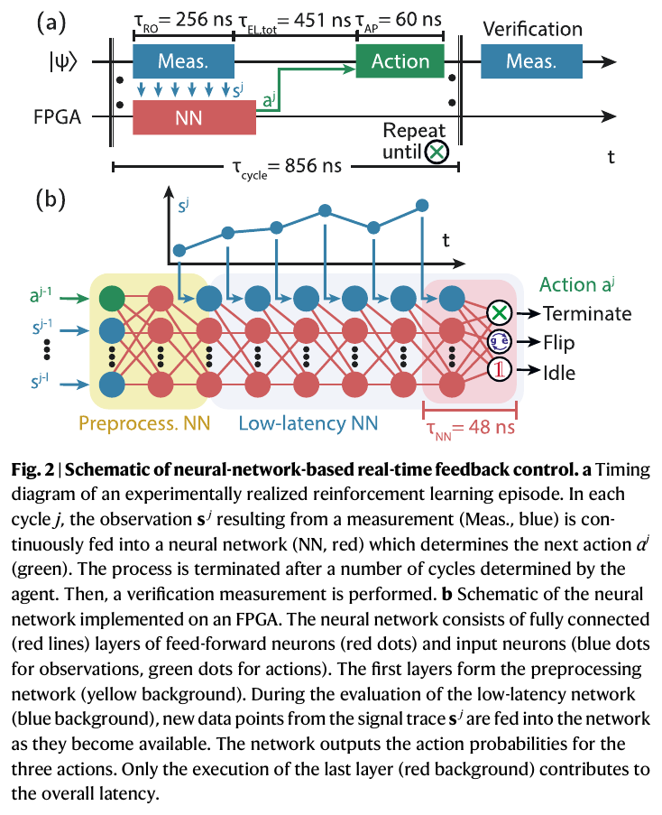
Nguồn: Reuer et al., Nat. Commun. 14:7138, 2023, Fig. 2, tr. 2
- \(\tau_{NN}\)only the last layer adds latency
- \(\tau_{\rm cycle}\)856 ns
\(\tau_{NN}/\tau_{EL,tot}=10.6\%\): the network is about a tenth of the delay; most is converter latency (p. 2). Convergence in under \(30{,}000\) episodes, 3 minutes; initialisation error \(1.79\%\to0.18\%\), a factor of \(9.94\) (Fig. 3e).
Dual frames reduce estimator variance
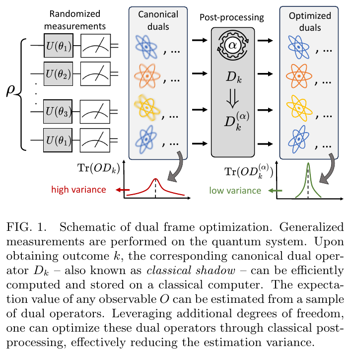
Nguồn: Fischer et al., arXiv:2401.18071, 2024, Fig. 1, tr. 2
- \(D_k\)dual frame of \(M_k\)
- \(M_k\)POVM element
Eqs. (4), (5), (9), p. 3. One qubit, six Pauli elements, \(O=Z\), \(\rho=|0\rangle\langle0|\): the canonical dual gives variance \(2\); another dual that still reconstructs \(Z\) exactly gives \(\approx0\).
Adaptive measurement optimises the POVM by gradient
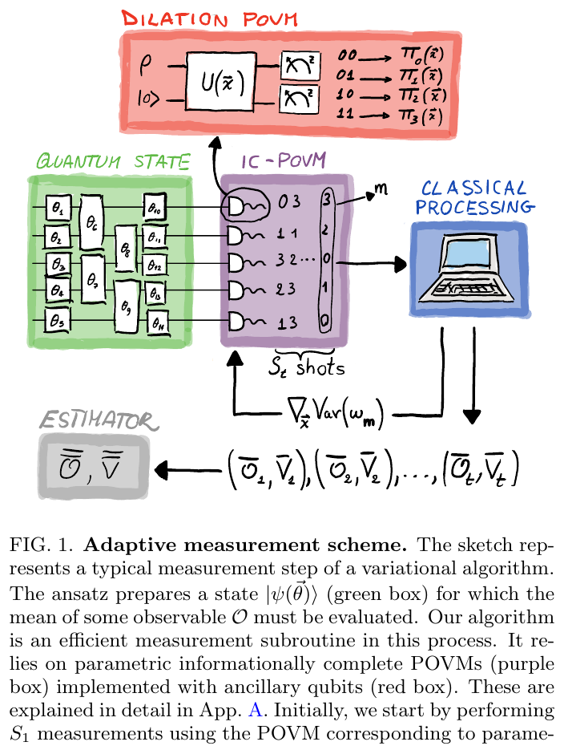
Nguồn: García-Pérez et al., arXiv:2104.00569, 2021, Fig. 1, tr. 3
- \(\bar V_t\)estimated variance of the \(t\)-th POVM
- \(\alpha\)weight of the second estimate
P. 7. With \(\bar V_1=4\times10^{-4}\), \(\bar V_2=10^{-4}\): \(\alpha_{\rm opt}=0.8\), \(\bar{\bar V}=8e-05\), below both.
Detector tomography by gradient descent
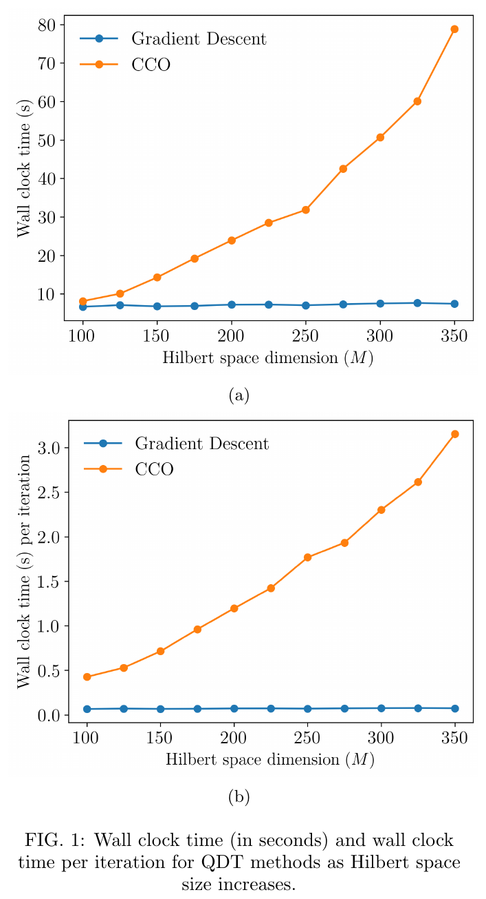
Nguồn: Anteneh, Pfister, arXiv:2511.14579, 2025, Fig. 1, tr. 4
- \(F_{ij}\)Poisson probability of the probe coherent state
- \(\Pi\)diagonals of the POVM elements
Eqs. (6), (8), p. 2. Variables: \(NM=5000\) (gradient descent) versus \(NM^2=1000000\) (constrained convex), a factor of \(200\) for \(N=25\), \(M=200\).
Accuracy and limits of gradient descent
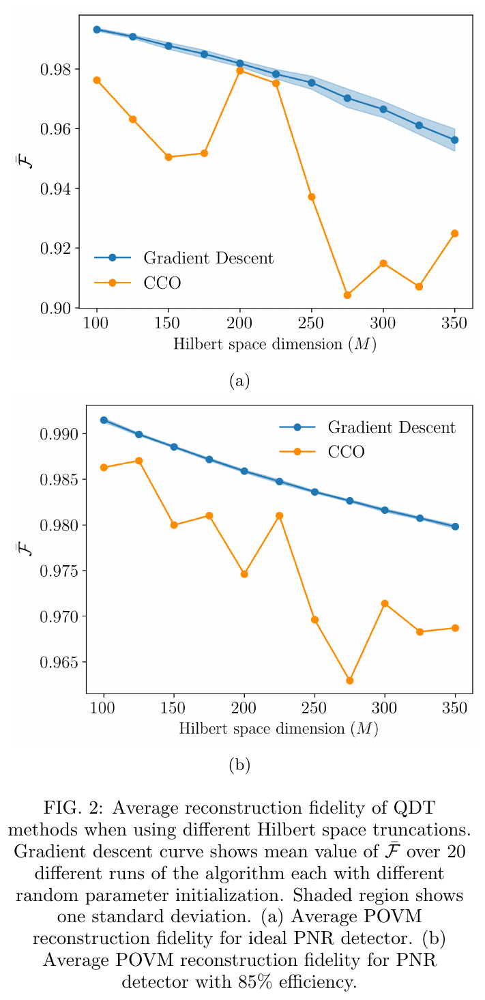
Nguồn: Anteneh, Pfister, arXiv:2511.14579, 2025, Fig. 2, tr. 5
Eqs. (10), (13), p. 3. Check with \(\eta=0.85\): \(\sum_nE_n=I\) (error 0), all eigenvalues \(\ge0\). The paper notes fidelity drops as \(M\) grows when the probe count does not.
Extrapolation beyond the training region
| Region | Surrogate MSE | Closed-form MSE |
|---|---|---|
| New samples in range | 3.7e-9 | 1.5e-2 |
| σ outside {0.1,0.5,1.0} | 2e-6 - 1e-3 | surrogate wins ×32 to ×14000 |
| \(\bar n\) 1.1-3 | surrogate wins | - |
| \(\bar n\) 3-16 | closed form wins ×2.9 to ×1900 | - |
Project measurements (probe v3, 13 Oct 2026). The Poisson tail at \(\bar n=8\), \(d=16\) is \(0.00823\), so \(d=16\) cannot represent it (checked by code).
Three-lane timeline of machine learning for quantum measurement
A 722 times speed-up over the SDP solver
- \(85.24\)ms/sample of SDP (Giang's results_final)
- \(0.118\)ms/sample of the surrogate
| Quantity | Value |
|---|---|
| Surrogate MSE, full set | \(1.552\times10^{-4}\) |
| Closed-form coverage | 8.62% (388/4500) |
| MSE on 388 samples: surrogate / closed | \(3.797\times10^{-4}\) / \(1.753\times10^{-2}\) |
The closed form is worse by \(1.753\times10^{-2}/3.797\times10^{-4}\approx46.2\) on the matched subset.
Parametrising a POVM with a Stiefel isometry
- \(W_n\)block \(r_n\times M\), rank \(E_n\le r_n\)
- \(W\)stacked matrix with orthonormal columns
Eqs. (16), (17), (21), pp. 6 to 7. Numeric test: an orthonormal \(6\times3\) matrix split into blocks \(W_1,W_2\): \(\|W_1^\dagger W_1+W_2^\dagger W_2-I\|_\infty=2.2e-16\), both \(W_n^\dagger W_n\) have eigenvalues \(\ge0.053\).
\( W\leftarrow W-\gamma\,\nabla^*_WL(W) \)
PINNs for Lindblad dynamics in quantum memories
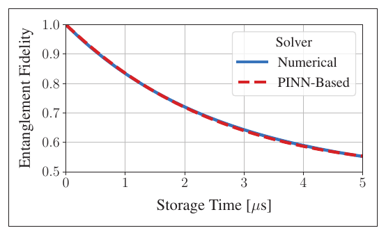
Nguồn: Alsaui et al., IEEE Commun. Mag., 2026, Fig. 4, tr. 241
P. 241: \(N=2,9,25\) qubits give \(4^N=16;\ 262144;\ 1125899906842624\) density entries; the PINN keeps \(592\) weights (paper: 592, three layers of 10 neurons), trained on 60 time points for 20,000 epochs.
Plan for multi-σ and adaptive d
| Tier | \(\bar n\) | d | Inference cost |
|---|---|---|---|
| 1 | \(\le4\) | 32 | \(O(32^3)\) |
| 2 | \(\le8\) | 64 | \(O(64^3)\) |
| 3 | \(\le16\) | 128 | \(O(128^3)\) |
Proposal, not run yet (KHO/F_FUTURE_DIRECTIONS/09). Cheap to costly: calibrate on a physical baseline with continuous multi-σ, and only then change representation (the network predicts weights and nodes of a coherent-state mixture).
Comparison of the eight machine-learning directions
| Paper | Learned object | Constraint enforced by | Key result |
|---|---|---|---|
| Pérez-Salinas | qubit state | unitary rotation | 12 params, >90% |
| Fischer | dual frame | valid frame | lower variance |
| García-Pérez | POVM | qubit-ancilla parametrisation | faster than Pauli |
| Vora | qubit label | sigmoid, fixed point | 54 ns, 98.46% |
| Reuer | policy | softmax | 0.18% error |
| Anteneh | POVM | softmax, Stiefel | \(NM\) vs \(NM^2\) |
| Alsaui | \(\rho(t)\) | trace, Hermitian penalty | 592 weights |
| Project | \(\rho_0,\rho_1\) | Cholesky | 722 times |
Summary and practical lessons
- \(\rho=LL^\top/\operatorname{Tr}\) gives a valid state; \(E_n=W_n^\dagger W_n\) gives a valid POVM.
- The project network is a physics-constrained surrogate, not a PINN.
- 722 times faster, but trusted only for \(\bar n\le1.1\).
- Every number on the slides can be recomputed with data/verify/m13_verify.py.
Detailed notes
- Backbone [9,128,128,256,256]: 9·128+128 + 128·128+128 + 128·256+256 + 256·256+256. = 116608.
- One Linear(256,256) head has 256·256+256 = 65792.
- Two heads plus backbone = 248192.
- Take the raw output and apply softplus to the diagonal.
- Form LLᵀ and divide by the trace.
- Smallest eigenvalue of ρ₀: 0.1617 > 0.
- P_e = 0.30669.
- Six Pauli elements, p = [0.333, 0, 0.167, 0.167, 0.167, 0.167].
- Canonical coefficients ω of Z = [3, -3, -1.11e-16, -1.11e-16, -1.11e-16, -1.11e-16].
- Variance = Σpω² − (Σpω)² = 2.
- V₁=4e-4, V₂=1e-4.
- α=V₁/(V₁+V₂)=0.8.
- V=V₁V₂/(V₁+V₂)=8e-05.
- 27 cycles × 2 ns = 54 ns.
- Against the 85.24 ms SDP: 1.579e+06 times.
- N=25, M=200.
- CCO: NM²=1000000; GD: NM=5000.
- Ratio 200.
Interactive practice
Quick self-check
Deep practice
Open the bank of 45 multiple-choice questions and 5 code-writing tasks →
References
- A. Pérez-Salinas et al., Data re-uploading for a universal quantum classifier, Quantum 4, 226 (2020).
- A. Alsaui et al., Physics-Informed Neural Networks for Quantum Internet Modeling, IEEE Commun. Mag. (Jan. 2026).
- L. E. Fischer et al., Dual frame optimization for informationally complete quantum measurements, arXiv:2401.18071 (2024).
- G. García-Pérez et al., Learning to measure, arXiv:2104.00569 (2021).
- N. R. Vora et al., ML-Powered FPGA-based Real-Time Quantum State Discrimination, arXiv:2406.18807 (2024).
- K. Reuer et al., Realizing a deep reinforcement learning agent for real-time quantum feedback, Nat. Commun. 14, 7138 (2023).
- A. Anteneh, O. Pfister, Gradient-descent methods for quantum detector tomography, arXiv:2511.14579 (2025).